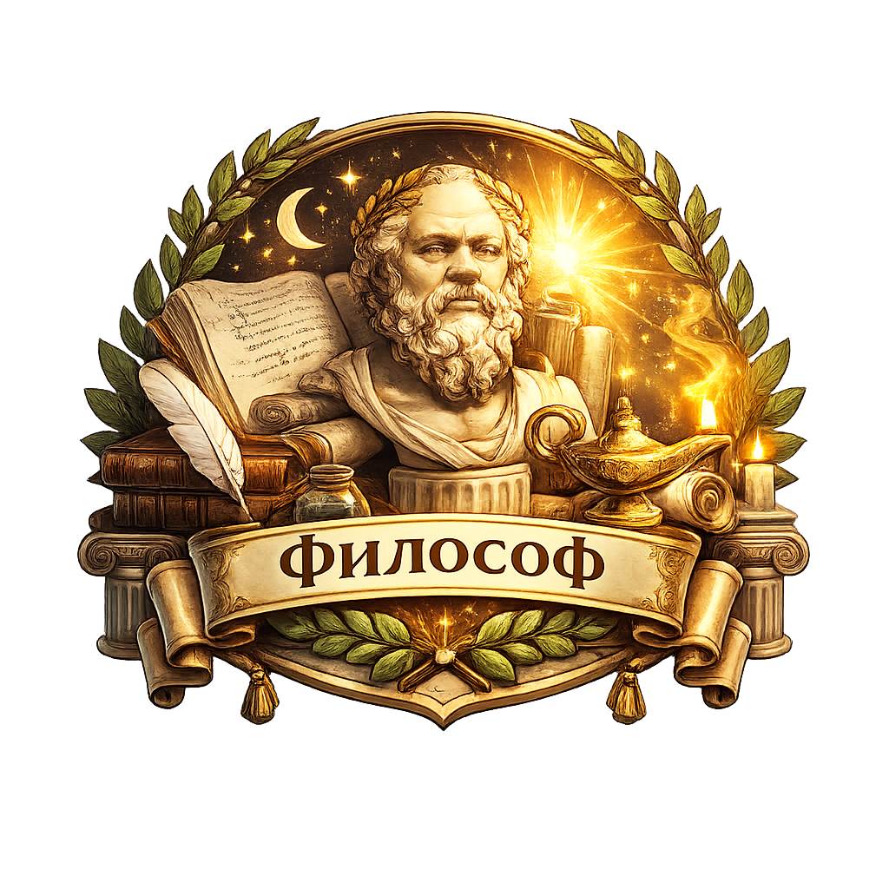
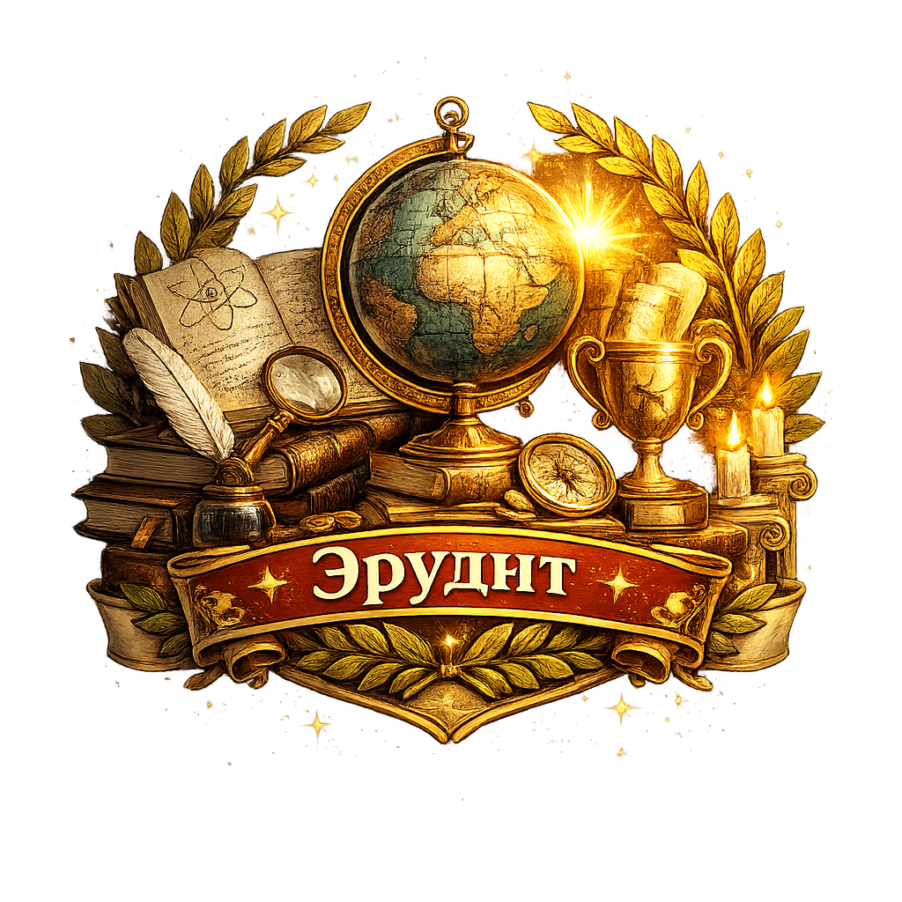

Новый раздел
НейроКафе стало местом для практики
Делитесь инсайтами, рисунками и историями. Комментарий или репост засчитывает действие в серию.
Новый раздел
Делитесь инсайтами, рисунками и историями. Комментарий или репост засчитывает действие в серию.
Сегодня
Афоризм дня · 12 минут назад

“Опыт начинается там, где мы перестаем спорить с линией”. Я прочитала афоризм и оставила короткий рисунок как ответ.
Статья месяца · вчера
Закрываю персональный вызов: 4 из 10 статей. Самым полезным оказался комментарий к чужому опыту, потому что он помог сформулировать свой.
Персональный вызов
Цель сформирована для когорты пользователей, которые уже читают материалы, но пока не делают это регулярно.
Все афоризмы за 7 дней с комментариями.
30 статей с комментариями или репостами.

10 заданий недели вместе с сообществом.
Друзья
Приглашенные пользователи попадают в ваше сообщество, где доступны совместные активности.
Ольга
1000Вы
720Марина
500Поддержи друга
Выполните 3 задания вместе на этой неделе.
Для команды
Эти карточки не являются экраном для обычного пользователя. Здесь собраны готовые тексты, которые можно скопировать и использовать в email-рассылке, баннере внутри приложения и push-уведомлении.
Email-рассылка
Теперь ваши открытия, рисунки и комментарии живут в общей ленте. Делитесь опытом, поддерживайте других и получайте нейро за осмысленные действия.
Кнопка копирует текст письма для рассылки пользователям перед запуском.
Баннер в приложении
Первый комментарий или репост засчитает день в серии и откроет стартовую награду.
Кнопка копирует короткий текст для баннера на главном экране или в разделе сообщества.
Push-уведомление
Прочитайте, оставьте отклик и сохраните серию. Это займет пару минут.
Кнопка копирует текст push-уведомления для возврата пользователя в ленту.